Spec 06 · En curso · branch design-system-v1
Migración
El registro de cómo el design system entra en la app, etapa por etapa: qué cambió, cómo se verificó y el antes y después de las pantallas públicas. Se actualiza al cerrar cada etapa.
Estado
| Etapa | Qué | Estado | Commit |
|---|---|---|---|
| 1 · Tokens | Tokens v1 en theme.css y escalas de Tailwind; grises legibles; fuentes y reducir movimiento. | Hecha | e6b14f4 |
| 2 · Componentes base | Clases del sistema, foco visible, BackLink, campos y toasts. | Hecha | 89be7b7 |
| 3 · Imágenes | Fotos a WebP, loading, alt, velo en texto sobre foto. | Hecha | bd7c4e2 |
| 4 · Pantallas | Cada pantalla a tokens y piezas, de a una. Hechas: Home, Cuenta, Detalle de ritual, Pasos de creación, Compartir/Explorar/Wiki, Login/Onboarding. | En curso · 6 de 7 | 1e75108 Home · 1d73b47 Cuenta · af25e66 Detalle · 2ba79aa Pasos · 5f6171e Compartir/Explorar/Wiki · c0038d6 Login/Onboarding |
| 5 · Limpieza | Clases y nombres viejos, shadcn sin uso, archivos sin uso, .dark. | Pendiente | — |
editorial-, calendario cósmico aparte y sin modo oscuro. Las que borran archivos se ejecutan recién en la etapa 5.Etapa 1 · Tokens
--ink-subtlepasa de #9ca3ad (2,5:1) a #6b727c (4,9:1). Los 53 usos de--ink-soften texto pasan a--ink-subtle;--ink-softdeja de existir y lo decorativo usa--ink-decor.- Tokens nuevos:
--on-ink-*,--surface-*,--line-*,--danger,--success,--oracle-*, foco y movimiento. Los nombres viejos (--app-page,--border-*,--surface-softest) quedan como alias hasta la etapa 5. - Escalas de Tailwind:
text-display…text-eyebrow,rounded-xs…rounded-panel,shadow-soft/lifted/shell,ease-editorial, y colores como clases (text-ink-muted,bg-surface-muted,border-line-default). - shadcn apunta a los tokens editoriales (el diálogo y el menú ya usan la misma paleta).
- Una sola carga de fuentes desde
index.html: fuera Source Serif 4 y el Inter repetido. - Reducir movimiento global: CSS +
<MotionConfig reducedMotion="user">.
Verificado: build y tipos sin errores nuevos; los tokens llegan al CSS final; capturas de las 5 pantallas públicas.
Etapa 2 · Componentes base
- Clases nuevas:
editorial-button(primario, secundario, terciario, peligro, sobre oscuro,--lg),editorial-input,editorial-notice,editorial-skeleton,editorial-badge,editorial-option,editorial-back-linky variantes de card y eyebrow. - Actualizadas en el lugar: botones viejos a peso 400; botón de ícono redondo de 44; textarea en sans; error en
--danger; rótulo y ayuda de campos; pill y chip de 13 px; link de sección con área de 44. - Foco visible con teclado en toda la app (antes no había).
- Componente
BackLink(texto o ícono), listo para la etapa de pantallas. - El email de Login y el nombre de Cuenta pasan a
editorial-input(tenían el foco desactivado); el nombre deja la serif de 22 px. - Toasts con los valores de la spec.
Verificado: build y tipos; recorrido con Tab en Login y Explorar (cada elemento muestra el contorno o el borde de foco).
Etapa 3 · Imágenes
146 MB
fotos antes
4,3 MB
las 50 fotos en uso, en WebP
8
originales sin uso que se borran en la etapa 5
- Las 50 fotos en uso pasan a WebP de 1080 px de ancho y calidad 75 con
scripts/optimize-images.sh. Se revisaron a ojo las que más bajaron de peso (cielos lisos, sin pérdida visible). Las originales siguen en el historial de git. - Referencias a
.webpy el nombreabastractcorregido aabstract. Verificado: las 50 rutas responden200 image/webp. loading="lazy"ydecoding="async"en todas las fotos salvo las que se ven primero (hero de Home y del detalle de ritual);alt=""donde el título ya está al lado (el hero decía “Cielo actual”).- Tarjetas de ritual y de recomendación: velo más fuerte arriba y el rótulo pasa al eyebrow del sistema (10 px en blanco). Ahora se leen “CLARIDAD” sobre las dunas y “AMOR PROPIO” sobre el agua.
- Hero de Home: se mantiene texto oscuro sobre cielos claros (es una decisión de diseño que funciona), pero los rótulos pasan de negro 48 % a 66 % y de blanco 68 % a 82 %; con texto claro, velo arriba. La regla quedó documentada como excepción en la spec 05.
srcset.Verificado: build y tipos; capturas de las 5 pantallas públicas (la herramienta de capturas ahora fuerza la carga de las fotos diferidas antes de sacar la imagen).
Etapa 4 · Pantallas
| Pantalla | Estado |
|---|---|
| Home (hero, intención, oráculo, tarjetas) | Hecha 1e75108 |
| Cuenta y registro diario | Hecha 1d73b47 |
| Detalle de ritual y reproductor | Hecha af25e66 |
| Pasos de creación | Hecha 2ba79aa |
| Compartir, Explorar y Wiki | Hecha 5f6171e |
| Login y Onboarding | Hecha c0038d6 |
| Stories y calendario | Pendiente |
Home
- Hero: sin estilos escritos a mano; eyebrow del sistema, título en
display(48) y el primario del sistema en lugar del botón recto de 58 px con peso 600 (decisión 3). Sobre fotos oscuras el primario es blanco. - Intención y oráculo: títulos en
title-2; la intención y “La mirada” del arcano pasan a sans (serif solo en titulares); botones, pill, skeleton y error del sistema; el oráculo usa los tokens--oracle-*en vez de dorado y carbón escritos a mano; margen lateral de 24 como el resto. - “Tu camino”: el texto de las tres tarjetas pasa de 9 y 11 px (peso 600 sin cargar) a 11 y 14 px.
- Recomendación y grilla de rituales: card del sistema; el título chico de la grilla deja la serif de 13 px y pasa a sans 14; metadatos en 11 legibles; “Ver ritual” es el primario; guardar tiene área de 44.
- Cielo de la semana, diálogo del día y notas: a la escala (títulos de 20/26, caption 11) y a los radios (32 el diálogo, 16 los bloques internos). El calendario cósmico usa las mismas clases del diálogo, así que heredó esos radios.
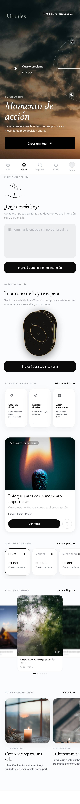
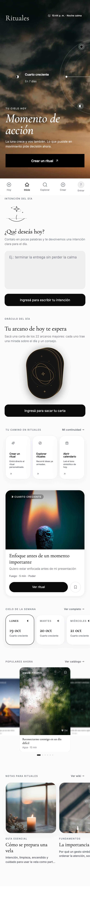
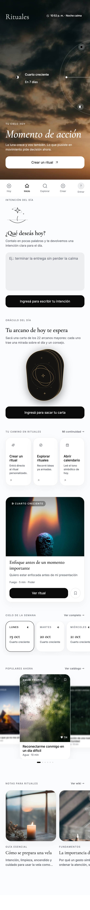
Con sesión iniciada (intención escrita, carta revelada) no se captura automáticamente: revisar a mano.
Cuenta y registro diario
Era la pantalla con más estilos a mano: 55 bloques style={{}} y 12 tamaños de letra (9 px en cinco rótulos). Quedan 4 estilos en línea, todos dependientes de datos (alto de las barras de actividad, colores de los puntos) o el lavado radial de fondo.
- Arriba:
BackLinky “Salir” con el mismo estilo; saludo entitle-1. - Tu práctica: los rótulos de 9 px pasan al eyebrow del sistema (10 px y legible); números en
title-1; radio 24. - Anclas recientes y registro diario: las citas y las intenciones dejan la serif chica y pasan a sans; metadatos en caption; carga con skeleton; error en rojo.
- Tus rituales: filtros como chips del sistema con su estado anunciado (
aria-pressed); el segundo “Todos” pasa a “Todos los elementos” para no repetirse; estado vacío con acción (quitar filtro, explorar o crear); menú de 44 px con “Eliminar” en rojo. - Tu cuenta: rótulos de campo del sistema y un
<label>real para el nombre; preferencias como chips. - Borrar ritual: diálogo con radio 32 y título
title-2; “Cancelar” secundario y “Sí, borrar” en rojo sólido (antes era negro, decisión de la spec 03).
Requiere sesión: no hay captura automática. Verificado con build y tipos; revisar a mano en /cuenta.
Detalle de ritual y reproductor
- Barra inferior: antes mezclaba tres estilos de botón (
editorial-button-primary,-softy uno hecho a mano). Ahora: primario (“Iniciar” / “Crear el mío”) y secundarios (“Compartir”, “Guardar”, descargar), todos de 52 px; “Guardado” se anuncia conaria-pressed. - Hero:
BackLinky “Editar” en blanco sobre la foto; título entitle-2; los cinco badges salen de una sola clase (antes, cinco copias del mismo estilo en línea). - Contenido: intención y texto de cada sección en sans; secciones como cards suaves; el anclaje como card invertida.
- Hoja del reproductor: velo del sistema; botones del sistema en el cierre, en la pregunta de precio (“Sí” / “No por ahora”) y en las pistas de ambiente; rótulos unidos a sus campos; error del audio en rojo.
- Reproductor: los botones de retroceder, reproducir y adelantar y la barra de posición no tenían nombre para lectores de pantalla; ahora sí. “Reiniciar” pasa a pill.
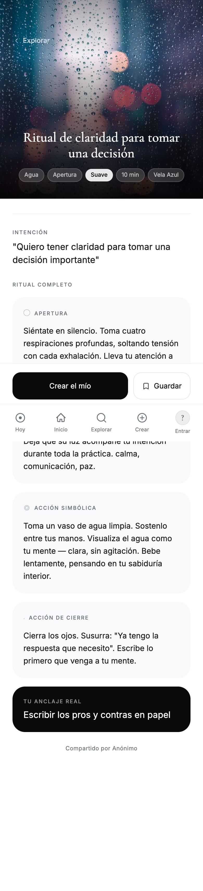
La hoja del reproductor, la pregunta de precio y el cierre requieren iniciar un ritual con sesión: revisar a mano.
Pasos de creación
- Opción elegida: pasa de invertirse a negro a borde negro sobre blanco (spec 03). Energía, intensidad y elemento anuncian cuál está elegida (
aria-pressed). El indicador de tilde se invierte para el nuevo estilo. La pista de ambiente que está sonando en el reproductor conserva el fondo negro, ahora de forma explícita. - Textos de las opciones: el título pasa de serif 18 a sans 17; la descripción, de 11 px al 45 % de opacidad (no se leía) a 13 px en
--ink-muted. - Botones: todos los “Siguiente” y “Construir ritual” son el primario del sistema; “Regenerar”, “Hacerlo más simple”, “Dame 3 versiones” y “Reintentar” son pills.
- Elemento y ritual: sin estilos escritos a mano; la hoja de versiones usa la hoja y el velo del sistema (radio 32); la carga se anuncia a lectores de pantalla y el error va en rojo.
- Barra de progreso: “Volver” de 44 px y una barra de progreso accesible (“Paso 3 de 5”).
- Voseo en la interfaz: “querés trabajar”, “te querés sentir”, “Elegí una versión”. Los textos de ejemplo de los rituales siguen en tú: van en la limpieza.
Requieren sesión: no hay captura automática. Verificado con build y tipos; revisar a mano en /crear/1 a /crear/5.
Compartir, Explorar y Wiki
- Explorar: “Crear” como pill; los grupos de filtro son pestañas accesibles y los filtros, chips del sistema con su estado anunciado; la grilla toma el margen de 24; el estado vacío suma “Limpiar filtros” y pasa a voseo (“Probá”).
- Tarjeta de la grilla (ajuste de Home): con el título en sans 14 se cortaban más títulos; queda en 13 con peso medio y entra la mayoría en dos líneas. El rótulo largo (“ATRAER OPORTUNIDAD”) termina en “…” antes del botón de guardar en vez de quedar tapado.
- Wiki: encabezado a la escala; en las cards, rótulo y resumen legibles sobre la foto.
- Nota de la Wiki: el botón de volver flotante no tenía nombre para lectores de pantalla; ahora es un
BackLinkde ícono (“Volver a la wiki”). Título endisplay, texto de lectura en sans con--ink-body(antes--ink-muted), viñetas en card suave. - Compartir: botones del sistema (copiar, WhatsApp e Instagram con sus colores de marca, publicar, volver); “Mostrar mi nombre” es un interruptor real para lectores de pantalla; “Copiado” se anuncia; voseo (“Compartido por vos”, “Podés”, “Vas a compartir”).
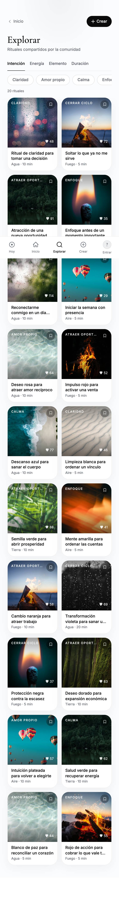
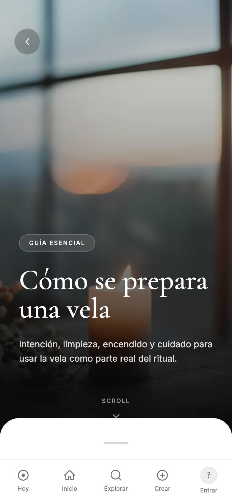
Compartir requiere sesión: revisar a mano. La bajada de la Wiki (“Este espacio queda preparado para sumar…”) es un texto de desarrollo visible para usuarios; queda anotado para contenido.
Login y Onboarding
- Login: títulos a la escala, primario del sistema, errores en rojo y anunciados; “Reenviar código” y “Cambiar email” como terciarios. Los seis casilleros del código no tenían rótulo: ahora cada uno dice “Dígito N de 6” y el primero acepta el autocompletado del código que llega por email.
- Onboarding:
BackLink; los tipos de ritual pasan a opciones del sistema (borde negro al elegir, estado anunciado), con título en sans en vez de serif 16 y descripción legible en vez de 11 px al 50 %; el botón de dictar anuncia si está escuchando; voseo (“querés hoy?”). - Avatar (UserMenu): área táctil de 44 alrededor del círculo de 36; la inicial pasa a sans.
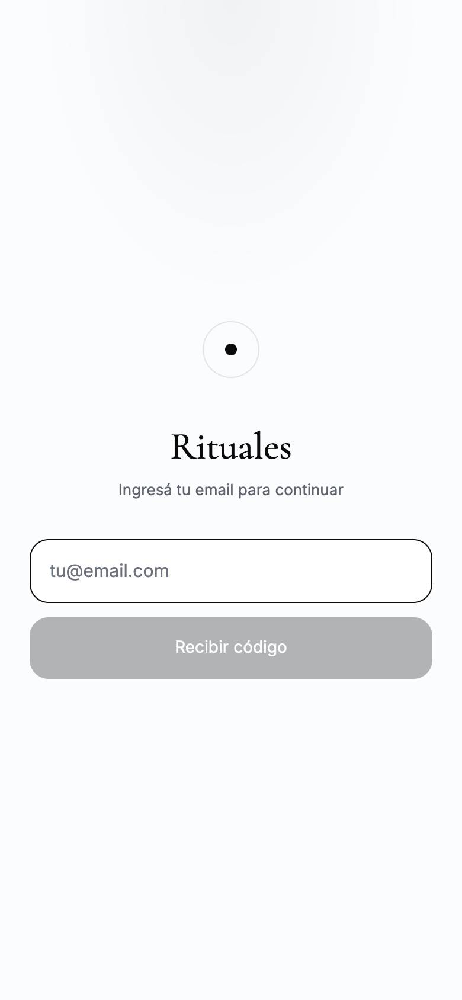
El paso del código no se captura (habría que enviar un email real) y Onboarding requiere sesión: revisar a mano.
GET /api/rituals/public y el backend responde 404: esa ruta no existe. También quedan textos de rituales en tú (“Siéntate”, “Toma”) en vez de vos; se corrigen en la limpieza.Antes y después
Pantallas públicas en 390 px, mismas condiciones (se puede scrollear cada captura). Las capturas se regeneran con tools/capture-screens.cjs.
Explorar
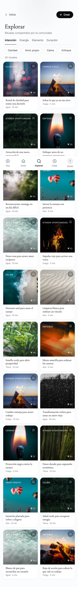
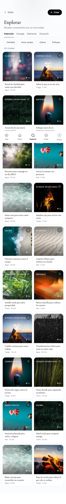
Etapa 1: “Agua · 10 min” y los metadatos se leen. Etapa 3: los rótulos sobre fotos claras (“CLARIDAD”, “AMOR PROPIO”) tienen velo, y las fotos pesan 30 veces menos.
Home
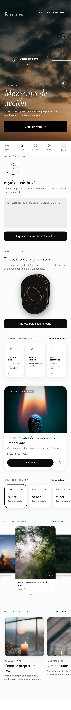
Login
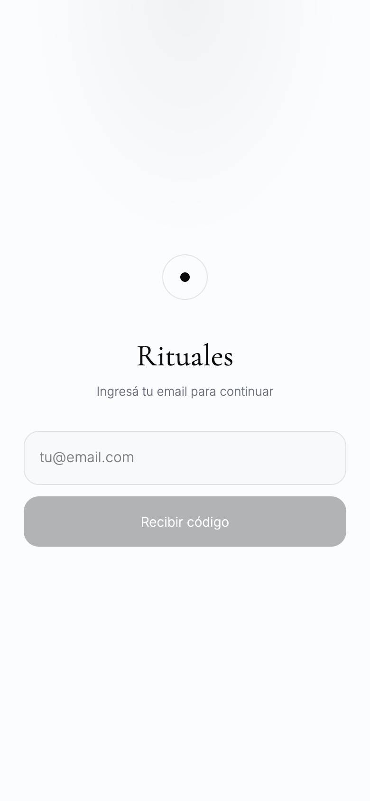
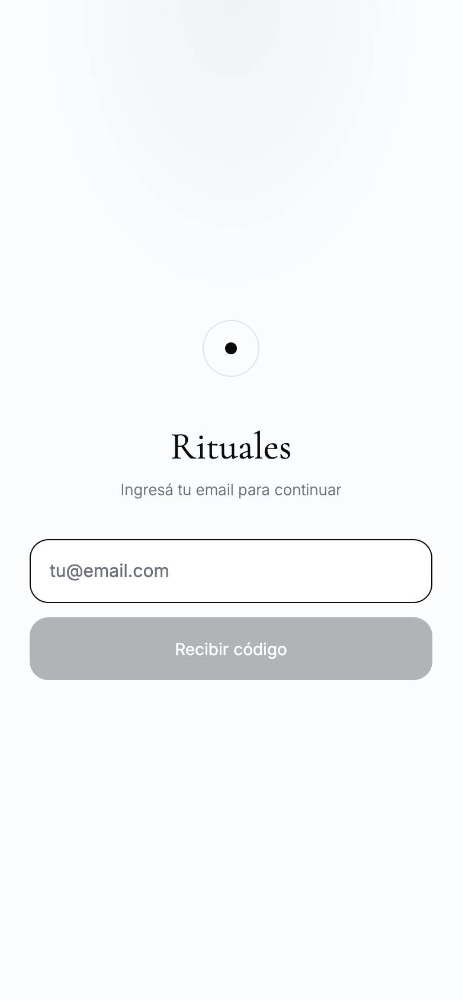
Calendario y Wiki
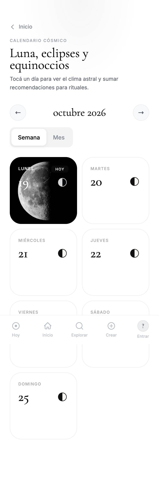
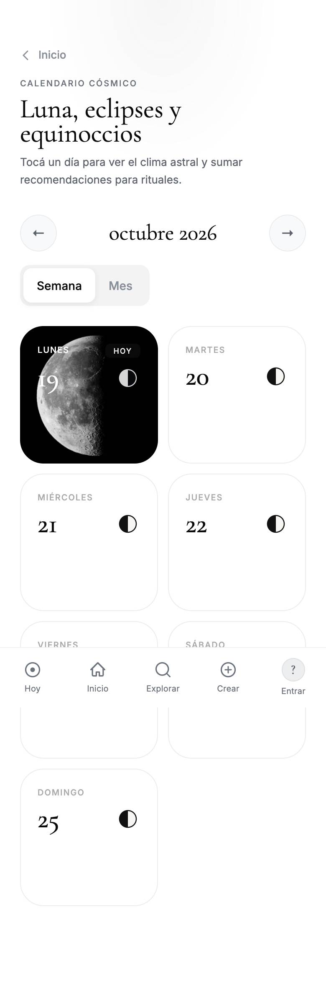
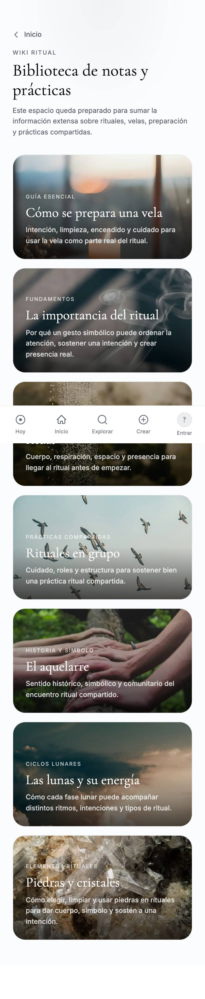
Las pantallas con login (Cuenta, detalle de ritual, pasos de creación) no se capturan automáticamente: se revisan a mano en cada etapa.